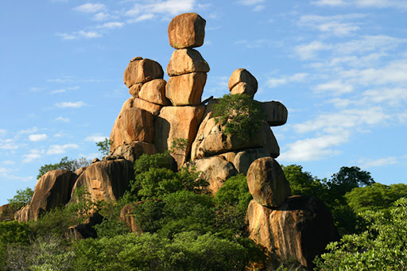
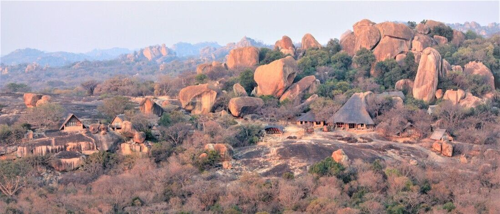
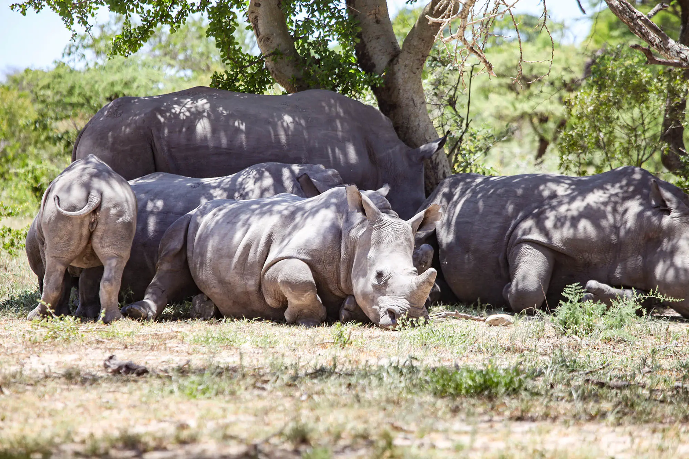

Explore the Mystical Matopos Hills
Journey through the granite wonderland of Matopos National Park, a UNESCO World Heritage Site where spiritual heritage and stunning landscapes meet. Home to ancient San rock paintings, the graves of Cecil John Rhodes and King Mzilikazi, and a thriving rhino sanctuary — Matopos offers a rare mix of history, culture, and wildlife.
Highlights
- • UNESCO World Heritage Site
- • Ancient San rock art galleries
- • Spiritual hills and sacred caves
- • Cecil John Rhodes’ grave at World’s View
- • Mzilikazi’s initial grave site – founder of the Ndebele Kingdom
- • Rhino tracking and conservation experience
- • Dramatic granite kopjes and scenic drives
Gallery

Aerial view over the majestic Matopos Hills

Ancient rock painting — timeless San artistry

Ancient rock painting — storytelling through stone

Cecil John Rhodes’ grave — World’s View

King Mzilikazi’s resting place — Ndebele heritage

Mzilikazi’s original grave site — sacred and historic

Rocks upon rocks — only in Matopo Hills

Big Cave Lodge — stay among the rocks

White rhinos resting under the African sun
Visa Disclaimer
• Nonimmigrant US visa: $185
• KAZA Univisa (Zimbabwe + Zambia): $50
• Work or religious US visas: $190
• Zimbabwe e-visa: $55 (paid in exact US dollars at the border)
All visitors must pay visa fees in cash at the border.
Bring small US bills: $1, $2, $5, $10, and $20 notes.
Credit/debit cards may NOT be accepted in smaller towns.
US dollars are widely accepted throughout Zimbabwe.
• Nonimmigrant US visa: $185
• KAZA Univisa (Zimbabwe + Zambia): $50
• Work or religious US visas: $190
• Zimbabwe e-visa: $55 (paid in exact US dollars at the border)
All visitors must pay visa fees in cash at the border.
Bring small US bills: $1, $2, $5, $10, and $20 notes.
Credit/debit cards may NOT be accepted in smaller towns.
US dollars are widely accepted throughout Zimbabwe.